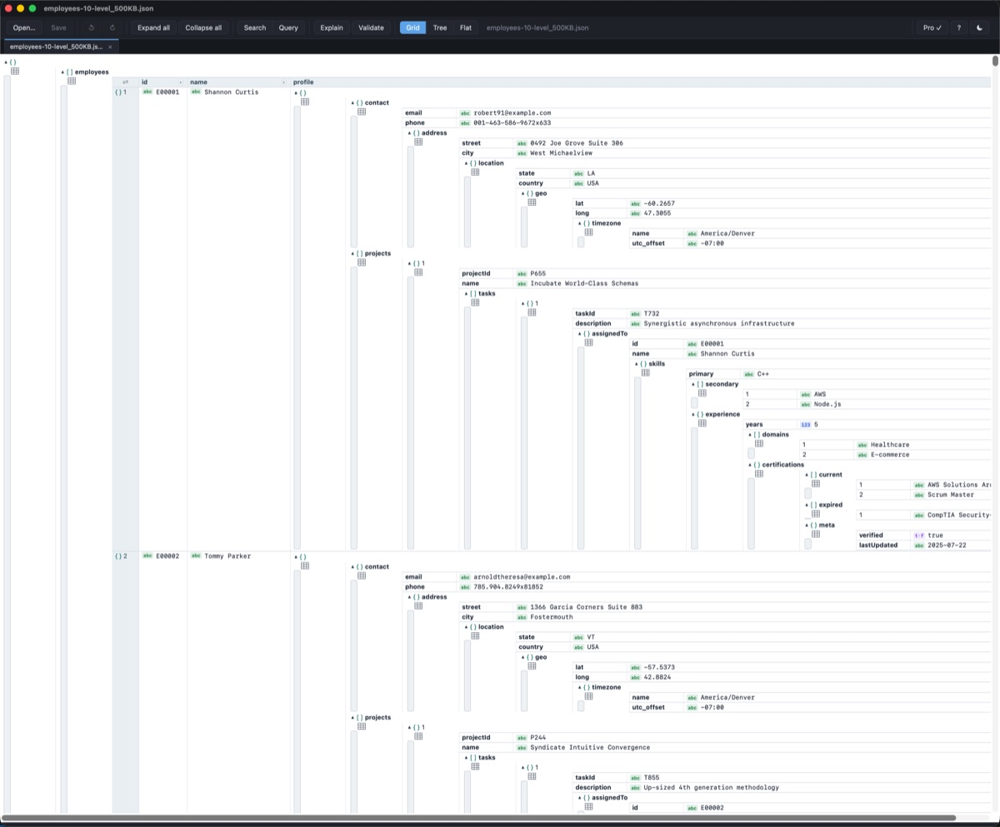
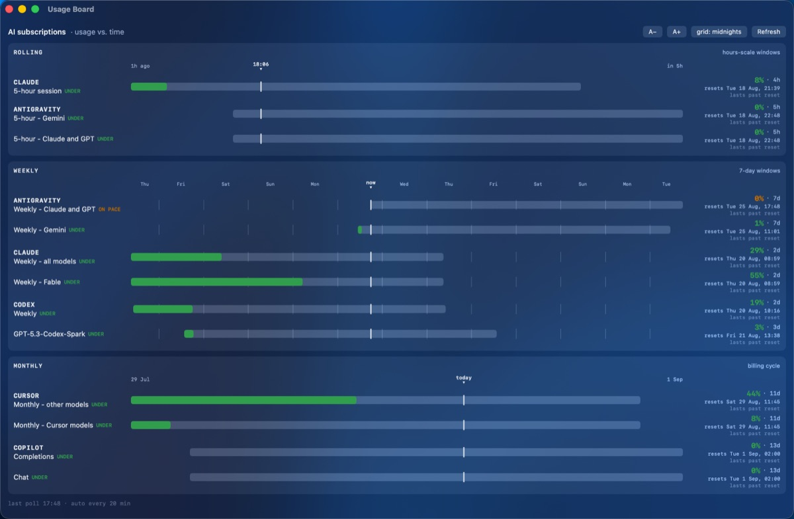
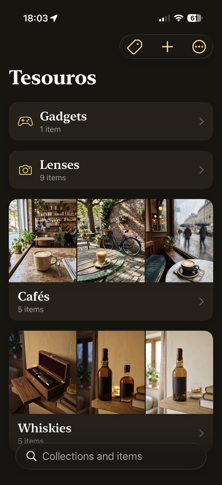

Small, careful apps by Somil, SLU.
A fast desktop viewer-editor for large local JSON files. Arrays become sortable tables; values edit in place and save with byte-fidelity. Free version available; Pro adds tabs, filters and a flattened table view.

A free menu-bar app showing your AI subscription usage vs. time — Claude Code, Codex, Cursor, Antigravity and Copilot on one board. Reads the tokens your CLIs already store; nothing leaves your Mac except calls to each vendor's own API.

A menu-bar app that spins your Mac's fans up to a chosen speed the moment you start recording or sharing your screen — Zoom, Teams, QuickTime, Snagit — and hands control back to macOS the instant capture ends. For Macs that overheat exactly when you start presenting.
A personal collections tracker for iPhone. Whiskies, cameras, cafés — anything worth keeping track of, with photos, ratings, notes and tags. Your data lives on your device and in your own iCloud. No accounts, no tracking.

Coming to the App Store Privacy policy
{kind=link}
{kind=link}
{kind=link}